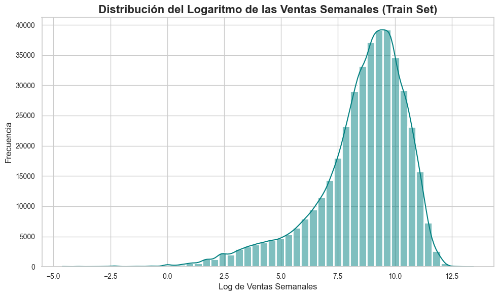
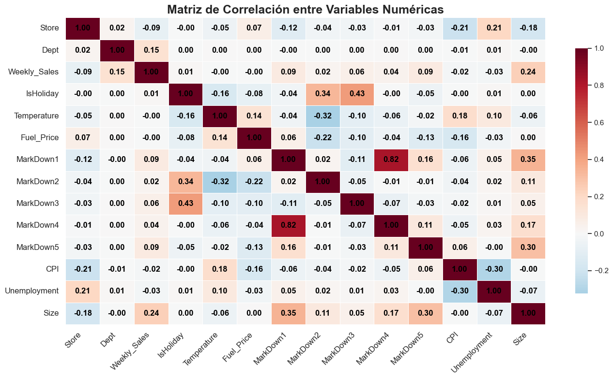
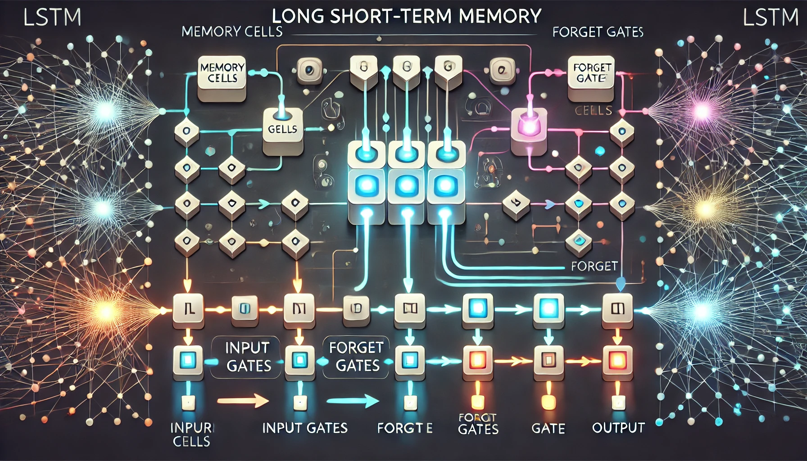
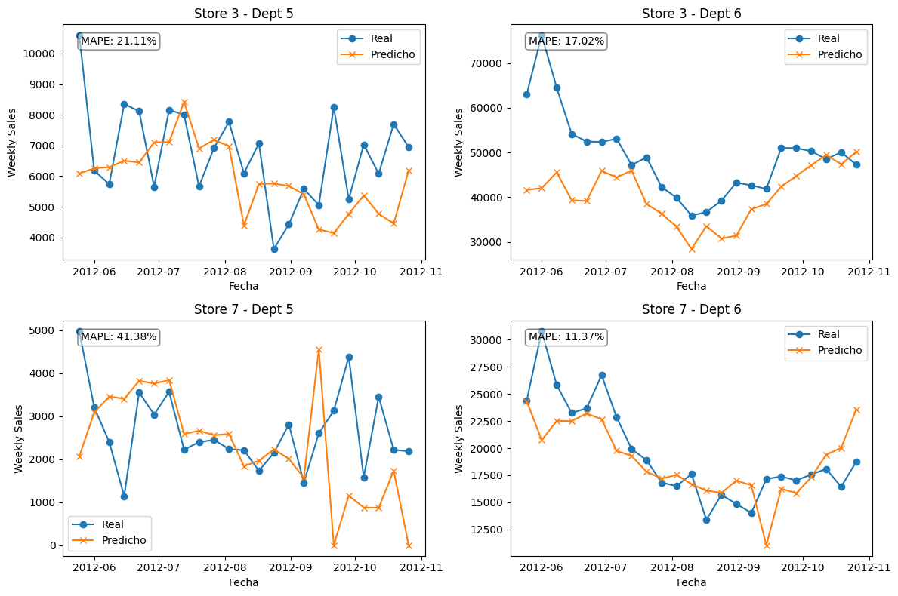
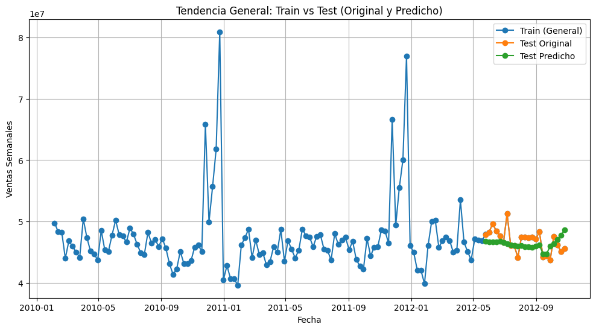
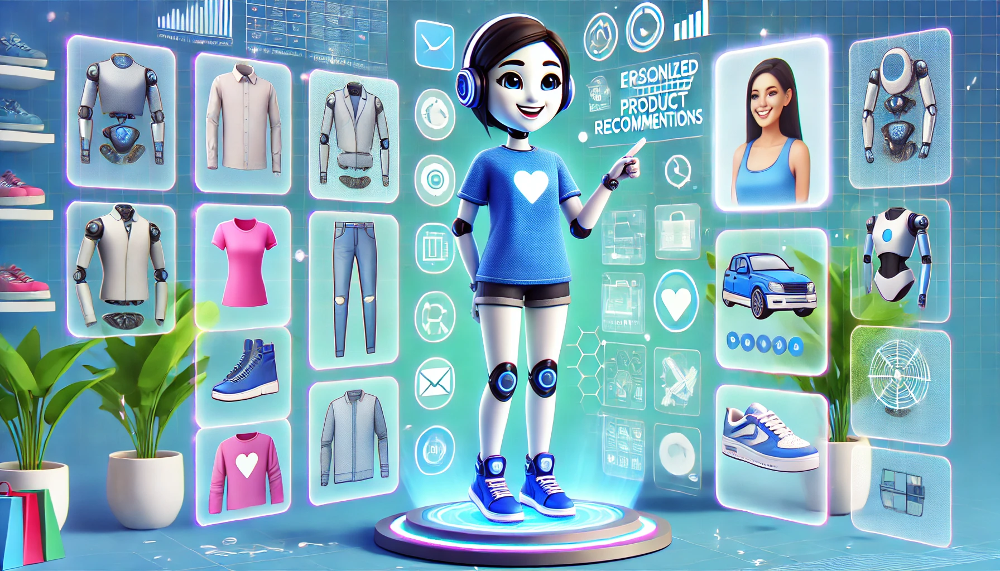

Aplicaciones de Redes Neuronales en el desarrollo de un Sistema Inteligente Integrado para Predicción, Clasificación y Recomendación en Comercio Electrónico
1 Resumen ejecutivo
El presente trabajo se centra en mejorar las estrategias de marketing en el comercio electrónico mediante la integración de modelos de inteligencia artificial, con un enfoque en la predicción de la demanda, clasificación de productos y generación de recomendaciones personalizadas. Utilizando redes neuronales y técnicas de aprendizaje profundo, se desarrollaron tres módulos: el primero para predecir la demanda en los próximos 30 días, el segundo para clasificar productos automáticamente según su imagen y el tercero para recomendar productos a los usuarios basándose en su comportamiento. Estos modelos fueron diseñados e implementados utilizando la metodología Design Thinking, asegurando que las soluciones fueran funcionales, escalables y alineadas con las necesidades del negocio.
El desarrollo de estos modelos se basó en arquitecturas avanzadas como redes neuronales recurrentes (LSTM) para la predicción de ventas y redes neuronales convolucionales (CNN) para la clasificación de imágenes. Además, se creó un sistema de recomendaciones utilizando embeddings y redes neuronales profundas, lo que permitió personalizar las sugerencias para cada usuario. A pesar de desafíos computacionales, como el alto costo de recursos para el modelo de recomendación, se logró implementar con éxito un sistema que optimiza la experiencia del cliente y la eficiencia operativa. Los resultados fueron desplegados en una herramienta web interactiva, facilitando la visualización de pronósticos y la toma de decisiones estratégicas en el ámbito del comercio electrónico.
2 Introducción
El comercio electrónico, que puede definirse según Hayes and Downie (2024) como el “proceso de compraventa de bienes y servicios a través de internet”, se facilitan a través de diferentes plataformas en línea como lo son principalmente las aplicaciones móviles y sitios web. En sus primeros años se definió como un proceso simple que incluía transacciones de compra entre vendedores y sus clientes por medio de sitios web, no obstante, a medida que se han desarrollado tecnologías más complejas y se han ampliado las dinámicas comerciales entre personas y empresas, el comercio electrónico ha comenzado a abarcar otras aplicaciones como las que se muestran a continuación y se ilustran en la Figura 1.
- Sitios web de comercios minoristas que también tienen tiendas físicas.
- Plataformas de economía colaborativa que facilitan la adquisición de servicios.
- Sitios de redes sociales, por ejemplo, Facebook Marketplace, donde los usuarios pueden ofrecer y vender bienes y servicios.
Figura 1.
El comercio masivo presenta nuevos desafíos, a medida que la llegada de la inteligencia artifical presenta soluciones a la medida de sus problemas.  Tomado de https://www.youtube.com/watch?v=XRRu9cea1sg
Tomado de https://www.youtube.com/watch?v=XRRu9cea1sg
Considerando lo anterior, y si se tiene un enfoque especial en la dinámica de comercio electrónico generado por las compañías que ofrecen bienes a través de un sitio web, abarcando grandes multitudes de clientes (y posibles clientes), es posible observar que se presentan una serie de retos a la hora de desarrollar estrategias de marketing adecuadas y que aporten valor al negocio. Algunos de estos retos, definidos después de contrastar con lo dicho por Bengochea (2023) son:
¿Cómo mejorar las actividades logísticas y de gestión del inventario, que pueden verse afectadas a causa de una mala (o nula) estimación de la demanda futura o una clasificación incorrecta de los productos que se ofrecen a los clientes?
¿De qué manera mejorar la retención de clientes y brindar una experiencia personalizada a cada comprador, disminuyendo así la pérdida de ventas potenciales y mejorando la reputación en el mercado?
Estos retos pueden ser abordados desde diferentes perspectivas. sin embargo, el presente trabajo pretende plantear soluciones desde las temáticas vistas en el curso de Redes Neuronales y Algoritmos Bioinspirados, desarrollando herramientas que puedan servir de ayuda a la hora de tomar decisiones por parte del equipo de mercadeo en la sección dedicada al comercio electrónico de una compañía. Para esto, se plantearán los siguientes objetivos que esperan ser alcanzados a lo largo del trabajo aquí desarrollado.
Objetivo general
Desarrollar un sistema basado en aprendizaje profundo que integre predicción de demanda, clasificación de productos y recomendaciones personalizadas en la dinámica de negocio de una empresa de comercio electrónico.
Objetivos específicos
Desarrollar un modelo de redes neuronales que pueda estimar la demanda durante los próximos 30 días de acuerdo con información histórica proporcionada por la tienda de comercio electrónico.
Desarrollar un modelo de redes neuronales que pueda clasificar automáticamente un producto de acuerdo con categorías previamente establecidas, a fin de facilitar la gesión de inventarios.
Diseñar un sistema de recomendaciones de productos de acuerdo con el comportamiento presentado por un usuario de la tienda a la hora de navegar a través del sitio web de comercio electrónico.
3 Metodología
Para el desarrollo del presente trabajo se planteó una metodología basada en Design Thinking, pues garantiza un enfoque centrado en el usuario (que para este caso, será la tienda de comercio electrónico que requiere una mejora en sus estrategias de marketing para abordar los retos anteriormente mencionados), el cual permitirá comprender sus necesidades y diseñar una solución innovadora. Dicha metodología será desarrollada en las cinco fases que se describena a continuación:
Empatizar: - Análisis del comportamiento de clientes y tendencias de compra en comercio electrónico. - Identificación de problemas clave mediante análisis de datos históricos.
Definir: - Formulación de los problemas a resolver con base en la información obtenida en la fase de empatización. - Identificación de métricas clave para evaluar el desempeño de los modelos de redes neuronales artificiales.
Idear: - Propuestas de soluciones utilizando aprendizaje profundo para cada módulo del sistema. - Comparación de enfoques para determinar el más adecuado según los recursos disponibles.
Prototipar: - Desarrollo inicial de modelos de predicción de demanda, clasificación de productos y recomendación personalizada. - Construcción de una interfaz web interactiva para visualizar los resultados.
Testear: - Evaluación de los modelos con métricas como RMSE, MAE, precisión y F1-score. - Pruebas con usuarios para validar la funcionalidad y usabilidad de la herramienta web.
Por medio de este enfoque se espera asegurar que las soluciones implementadas sean funcionales, escalables y alineadas con las necesidades reales de la empresa de comercio electrónico.
3.1 Módulos
Como se mencionó anteriormente, el trabajo será dividido en los siguientes módulos, con el fin de separar adecuadamente las actividades de diseño y desarrollo relacionadas con cada uno de los objetivos; posteriormente los resultados obtenidos en cada módulo serán unificados para el proceso de análisis de resultados y despliegue de la herramienta web que integrará todo el sistema de soluciones establecido.
- Módulo de predicción de la demanda.
- Módulo de clasificación de productos.
- Módulo de recomendaciones personalizadas.
Cada uno de los módulos se desarrollará a continuación con más amplitud, dando a conocer los detalles técnicos en el diseño e implementación de cada uno, además de la manera única en que cada uno de ellos contribuye a la solución del problema inicialmente planteado.
4 Desarrollo técnico por módulo
4.1 Módulo de predicción de la demanda
El problema de predicción de inventario es un desafío recurrente en la industria del comercio electrónico. Modelos de negocio como el dropshipping dependen fundamentalmente de una gestión eficiente de inventarios para garantizar entregas rápidas y minimizar costos operativos. Por ello, el análisis de esta problemática se vuelve esencial para la optimización de la cadena de suministro y la mejora en la toma de decisiones estratégicas.
Esta sección estará enfocada en entrenar y desarrollar un producto de inteligencia artificial basado en redes neuronales recurrentes con múltiples salidas, orientado al pronóstico de ventas en almacenes de cadena, específicamente para Walmart. Dicho problema fue ideado a partir del trabajo propuesto por Ahmedov (2022), el cual sugiere seguir una metodología basada en el Cross-Industry Standard Process for Data Mining (CRISP-DM), un marco ampliamente utilizado en proyectos de minería de datos e inteligencia artificial. En la Figura 2 puede observarse una representación artística de un componente que cobrará vital importancia más adelante: las series de tiempo.
Figura 2.
Ilustración de una serie de tiempo.  Elaborado mediante GPT.
Elaborado mediante GPT.
La metodología anteriormente mencionada se estructura en las siguientes etapas:
4.1.1 Comprensión del Negocio
Todo producto tecnológico que aspire a ofrecer una solución rentable debe centrarse en el entendimiento del negocio. En el caso del pronóstico de ventas para Walmart, la precisión en la predicción del inventario impacta directamente la rentabilidad y eficiencia operativa. Sin embargo, más allá de este caso específico, es crucial evaluar el impacto de una solución similar en otros modelos de negocio, como pequeñas y medianas empresas o plataformas de comercio electrónico.
4.1.2 Comprensión de los Datos
El insumo inicial de todo modelo de aprendizaje automático o inteligencia artificial son los datos. En este caso, más que simplemente utilizarlos como materia prima, es necesario comprenderlos y mostrar cuál debería ser la información mínima necesaria para un negocio que aspire a desarrollar un modelo de pronóstico de ventas efectivo, capaz de apoyar la planificación de inventario.
4.1.2.1 Análisis Descriptivo
En primer lugar, se realizó el histograma de la variable respuesta en escala logarítmica para facilitar la visualización de las ventas semanales. Como se puede observar en la Figura 3, la distribución es asimétrica a la izquierda, teniendo la mayoría de ventas entre 7.5 y 10 logaritmo de las unidades de ventas semanales. Adicionalmente, tiene una media, mediana y moda que no necesariamente son iguales, ya que lo anterior se cumple solamente en distribuciones simétricas.
Figura 3.
Histograma de la variable respuesta.  Elaboración propia.
4.1.2.2 Matriz de correlación
También se realizó la matriz de correlación mostrada en la Figura 4, con el objetivo de observar la relación lineal entre las variables, especialmente, con la variable respuesta. Se observa que ninguna parece tener una relación lineal muy fuerte, siendo el departamento de la tienda y el tamaño las que más podrían tenerlo, sin embargo, sigue siendo una relación muy débil.
Figura 4.
Matriz de correlación entre las características presentes en el dataset.  Elaboración propia.
4.1.3 Preparación de los Datos
En esta etapa se llevó a cabo la limpieza, transformación y estructuración de los datos para su uso en el modelo. Algunas de las tareas clave incluyeron:
- Manejo de valores faltantes y datos atípicos.
- Generación de características (feature engineering) como tendencias de ventas, estacionalidad y efectos de días festivos.
- Normalización y escalado de variables.
- División del conjunto de datos en entrenamiento, validación y prueba.
4.1.4 Modelado
Para este caso, se implementó una red neuronal recurrente (Recurrent Neural Network, RNN) con múltiples salidas, aprovechando su capacidad para capturar patrones temporales en series de tiempo. Se explorarán variantes como Long Short-Term Memory (LSTM) y Gated Recurrent Units (GRU) para mejorar el rendimiento del modelo.
4.1.4.1 Variables exógenas
Las variables exógenas, de acuerdo con información proporcionada por Academia Balderix (2025) son aquellas que están fuera del sistema o proceso que está siendo modelado, pero tienen un impacto significativo en el comportamiento de las variables dentro de ese sistema. En el contexto de las ventas semanales, las variables exógenas son factores que pueden afectar las ventas, pero no dependen directamente de las ventas mismas.
Las empresas a menudo ajustan sus promociones o campañas de marketing en función de la temporada o el clima. Por ejemplo, una campaña de ropa de baño se intensifica en semanas calurosas, mientras que una promoción de ropa de invierno lo hace en semanas frías.
4.1.4.2 Ventanas móviles
Se utilizan para crear un conjunto de datos dinámico que se ajusta conforme avanza el tiempo. En lugar de utilizar toda la serie histórica para hacer una predicción (lo cual podría ser ineficiente o no tan preciso en ciertos contextos), las ventanas móviles permiten ajustar el modelo usando solo una porción reciente de los datos, lo que puede hacer las predicciones más sensibles a las últimas tendencias.
Las ventas de las últimas semanas pueden estar más influenciadas por factores recientes (como promociones, cambios en el clima, o eventos especiales) que las ventas de hace meses o incluso años. Usar una ventana móvil permite que el modelo se enfoque solo en los datos más relevantes. Además al usar un conjunto de datos más pequeño y reciente, se puede evitar que el modelo se sobreajuste (overfitting) a patrones antiguos que ya no se aplican a las condiciones actuales del mercado.
4.1.4.3 LSTM
Las LSTM son ideales para predecir series temporales porque pueden aprender y modelar patrones complejos en los datos, como estacionalidad, tendencias a largo plazo o eventos puntuales (como promociones, cambios de clima, etc.). En el caso de las ventas semanales, las LSTM son capaces de capturar las dependencias que pueden existir entre las ventas de semanas anteriores y las futuras.
Adicionalmente, pueden aprender de la estacionalidad (por ejemplo, ventas más altas durante ciertas épocas del año) así como de las tendencias a largo plazo (crecimiento o disminución de ventas). El funcionamiento anteriormente mencionado puede observarse en la representación artística de la Figura 5.
Figura 5.
Ilustración del funcionamiento de una LSTM.  Elaboración mediante GPT.
4.1.5 Evaluación
La validación del modelo se realizará utilizando métricas clave para problemas de series de tiempo, tales como: - Error Absoluto Medio (MAE) - Error Porcentual Absoluto Medio (MAPE)
Se evaluará la capacidad del modelo para capturar tendencias de ventas y su estabilidad en distintos escenarios, incluyendo cambios en la demanda y eventos atípicos. Estas métricas pueden observarse detalladamente en las Figuras 6 y 7.
Figura 6.
Predicciones para las ventas en cada departamento.  Elaboración propia.
Figura 7.
Predicciones para las ventas.  Elaboración propia.
4.1.6 Despliegue
Finalmente, el modelo se integrará en un sistema de que permita generar pronósticos segun los datos iniciales suministrados, considerando las siguientes especificaciones técnicas:
API en FastAPI para generar las predicciones.
Dashboards interactivos en una herramienta web que permitirá visualizar pronósticos y tomar decisiones estratégicas en la gestión de inventario para este ejemplo particular.
4.2 Módulo de clasificación de productos
El problema de clasificación mediante visión artificial es uno de los desafíos más prominentes en el campo de la inteligencia artificial, especialmente en aplicaciones que requieren la categorización automática de imágenes, como la identificación de objetos, reconocimiento facial o diagnóstico médico a partir de imágenes. La capacidad de los sistemas para aprender a reconocer patrones visuales a través de redes neuronales profundas ha abierto nuevas oportunidades en sectores como la seguridad, la atención sanitaria y el comercio electrónico, entre otros.
En esta sección, el enfoque estará centrado en el desarrollo de un modelo de clasificación de imágenes utilizando redes neuronales convolucionales (CNN), un enfoque popular y altamente eficaz en tareas de visión por computadora. Este modelo fue entrenado con un conjunto de datos de imágenes etiquetadas y tiene como objetivo clasificar las imágenes en diversas categorías, como prendas de ropa, electrodomésticos y otros productos comunes en plataformas de venta en línea.
El problema específico para el que se plantea el modelo es la clasificación de jeans, camisetas, televisores y sofás, con el objetivo de mejorar la precisión en el reconocimiento de estos productos dentro de un sistema de recomendación de comercio electrónico o en un entorno de inventario automatizado. Este modelo estará orientado a la clasificación de imágenes de productos, utilizando una red neuronal convolucional para extraer características visuales relevantes y asignar correctamente cada imagen a su categoría correspondiente.
El proceso comienza con la exploración y preprocesamiento de un conjunto de datos etiquetado proporcionado por Kusawa (2022), el cual incluye una variedad de imágenes de productos como jeans, camisetas, televisores y sofás. Estas imágenes son normalizadas y transformadas para facilitar el entrenamiento del modelo, asegurando que el modelo sea capaz de generalizar bien en nuevas imágenes. Posteriormente, se entrenan diferentes arquitecturas de redes neuronales, como CNNs con múltiples capas, para realizar la clasificación de las imágenes.
El modelo resultante tiene como objetivo no solo clasificar las imágenes con alta precisión, sino también proporcionar un sistema capaz de adaptarse a nuevas categorías de productos con una mínima intervención humana. Este sistema se puede utilizar en plataformas de comercio electrónico para mejorar las recomendaciones de productos, automatizar el proceso de catalogación y facilitar una gestión de inventario más eficiente.
4.2.1 Limpieza del dataset
Al observar algunos grupos de productos, especialmente el de televisores, se puede detectar la presencia de imágenes que no están relacionadas con la temática particular, por lo que fueron eliminadas para no crear sesgos durante el entrenamiento.
4.2.2 Preprocesamiento de las imágenes
4.2.2.1 Normalización de las imágenes
En primer lugar se recorren las carpetas de diferentes categorías de productos para cargar las imágenes disponibles. Para garantizar una uniformidad en los datos, cada imagen se convierte al formato RGB (tres canales de color) y se redimensiona a un tamaño estándar de 224x224 píxeles. Posteriormente, se normalizan los valores de los píxeles dividiéndolos entre 255, lo que los escala a un rango entre 0 y 1, mejorando la estabilidad del entrenamiento de la red neuronal.
4.2.2.2 Conversión a arreglos numéricos
Una vez procesadas, las imágenes se almacenan en un arreglo de NumPy para facilitar su manipulación y procesamiento. De manera similar, las etiquetas correspondientes a cada imagen se almacenan en otro arreglo.
4.2.3 Data Augmentation
Para mejorar la generalización del modelo y reducir el sobreajuste, se aplica un proceso de data augmentation en las imágenes de entrenamiento, utilizando técnicas como las siguientes:
Rotaciones de hasta 30 grados.
Desplazamientos horizontales y verticales (20% del tamaño de la imagen).
Transformaciones de corte y zoom.
Reflejo de las imágenes
Estas modificaciones permiten simular nuevas imágenes a partir del conjunto de entrenamiento existente, ayudando al modelo a aprender características más robustas, lo cual es especialmente útil para el algoritmo del descenso del gradiente estocástico ya que al procesarse en batches permite distorsionar las imágenes en el bache que se esta procesando y no es necesario almacenar las nuevas imágenes.
Con esta técnica las 636 imágenes que había para cada batch se aumentan a un total de 20352, lo que permite obtener mayor información durante el entrenamiento.
4.2.4 Arquitectura de una red neuronal convolucional
Las redes neuronales convolucionales surgieron debido a la aparición de bases de datos masivas clasificadas en una gran variedad de posibilidades, y se mostraron como una alternativa muy poderosa para este tipo de problemas.
Figura 8.
Ilustración acerca del funcionamiento de una red neuronal convolucional. Tomado de An Introduction to Statistical Learning.
Como se puede ver en la Figura 8, estas redes imitan hasta cierto punto el comportamiento del cerebro para reconocer patrones basado en características específicas a partir de características diminutas como los bordes y el color, y evolucionando posteriormente a características más notables como las orejas y los ojos.
4.2.4.1 Capas convolucionales
Estas capas se basan en filtros convolucionales, los cuales consisten en plantillas que determinan la presencia de alguna característica particular en la imagen. Para lograr lo anterior se basan en la operación llamada convolución, donde ilustramos su funcionamiento de la siguiente manera:
- Imagen original
- Filtro de convolución
- Imagen convolucionada
La convolución en imágenes, contrastando con lo dicho por Roch (n.d.), consiste en aplicar un filtro pequeño sobre submatrices de la imagen original, multiplicando cada elemento correspondiente y sumando los resultados. Si una región de la imagen se parece al filtro, el valor resultante será alto, resaltando esa zona. Si no se parece, el valor será bajo. Este proceso permite detectar patrones y se usa en redes neuronales convolucionales (CNNs) para reconocimiento de imágenes.
4.2.4.2 Capas de pooling
Estas capas fueron utilizadas para condensar imágenes en un resumen más pequeño utilizando técnicas como max pooling y average pooling.
Max pooling selecciona el valor máximo dentro de cada bloque de la imagen (por ejemplo, de 2 ), lo que ayuda a resaltar las características más importantes.
Average pooling en cambio, calcula el promedio de los valores en cada bloque, produciendo una versión más suavizada de la imagen.
4.2.4.3 Capa de Activación (ReLU)
Posteriormente, se utiliza la función ReLU (Rectified Linear Unit) para introducir no linealidad y mejorar la capacidad de aprendizaje de la red. Convierte valores negativos en cero, manteniendo los positivos sin cambios.
4.2.4.4 Capas de Flattening
Sumado a lo anterior, estas capas permiten transformar las matrices de características que se forman al procesar las imágenes en vectores que pueden ser procesadas por capas completamente conectadas
4.2.4.5 Capas completamente conectadas
Finalmente, estas capas actúan como un clasificador, combinando la información extraída en las capas previas para hacer predicciones. Suele utilizarse la función softmax para clasificación múltiple y la función sigmoide para clasificación binaria, como puede observarse en la arquitectura presentada en la Figura 9.
Figura 9.
Arquitectura de una red neuronal convolucional. Tomado de https://developersbreach.com/convolution-neural-network-deep-learning/
4.2.5 Aplicación en el dataset
4.2.5.1 Arquitectura propia
Considerando lo dicho anteriormente, se desarrolló la siguiente arquitectura propia:
Capas Convolucionales y de Normalización
Se aplican convoluciones con filtros de 3 para detectar patrones en la imagen.
Se usa Batch Normalization después de cada convolución para estabilizar el aprendizaje y mejorar la convergencia.
Se emplea Max Pooling (2 ) después de cada bloque convolucional para reducir la dimensionalidad.
Bloques Convolucionales
Bloque 1: 32 filtros, seguido de normalización y max pooling.
Bloque 2: 64 filtros, normalización y max pooling.
Bloque 3: 128 filtros, normalización y max pooling.
Bloque 4 : 256 filtros, normalización y max pooling.
Aplanamiento y Capas Densas
Se aplanan las características extraídas en un vector de entrada para la parte densa.
Se añade una capa densa de 128 neuronas con ReLU.
Se incorpora Dropout (50%) para reducir el overfitting.
Capa de Salida
La última capa tiene tantas neuronas como clases en la clasificación.
Se usa la activación Softmax para generar probabilidades sobre cada categoría.
Compilación del Modelo
Se emplea el optimizador Adam para el entrenamiento.
La función de pérdida es categorical crossentropy
Se mide la precisión (accuracy) como métrica principal.
4.2.5.1.1 Matriz de confusión
Los resultados obtenidos por la red neuronal definida anteriormente pueden observarse en la matriz de confusión presentada en la Figura 10.
Figura 10.
Matriz de confusión para la red neuronal convolucional.  Elaboración propia.
Elaboración propia.
En este sentido, es posible ver que el modelo no es capaz de reconocer bien la clase 1, correspondiente a los sofás, confundiéndola de manera significativa con la clase correspondiente a los televisores. Esto puede sugerir que las imágenes correspondientes a los sofás no son de una buena calidad y esto puede inducir errores en el modelo.
4.2.5.1.2 Métricas obtenidas
En la Figura 11 se pueden observar las métricas obtenidas en el proceso de entrenamiento y validación de la red neuronal convolucional.
Figura 11.
Evolución de la precisión y la función de pérdida en el entrenamiento y la validación. Elaboración propia.
Conforme con la figura, puede decirse que la precisión va aumentando significativamente con la cantidad de épocas al tiempo que la pérdida va disminuyendo considerablemente, alcanzado valores muy bajos al final del entrenamiento. Podría parecer que es demasiado volátil y que se deberían aumentar el número de épocas, sin embargo, como se verá más adelante, hay problemas muy grandes para una de las clases por lo cual se necesitará buscar una alternativa que sea computacionalmente viable.
4.2.5.1.3 Reporte de clasificación
De acuerdo con el reporte de clasificación mostrado en la Tabla 1, se evidencia que para todas las clases hay un buen rendimiento en el recall excepto para los sofás, que tienden a ser confundidos con televisores.
Tabla 1.
Reporte de clasificación de la red neuronal convolucional.
| Clase | Precisión | Recall | F1-Score | Soporte |
|---|---|---|---|---|
| Jeans | 0.95 | 0.97 | 0.96 | 40 |
| Sofa | 1.00 | 0.07 | 0.14 | 40 |
| T-Shirt | 1.00 | 0.95 | 0.97 | 40 |
| TV | 0.49 | 0.95 | 0.64 | 40 |
| Accuracy | 0.74 | 160 | ||
| Macro Avg | 0.86 | 0.74 | 0.68 | 160 |
| Weighted Avg | 0.86 | 0.74 | 0.68 | 160 |
Elaboración propia.
4.2.5.2 Modelo preentrenado
Debido a los problemas presentados con la arquitectura propia, se explorará el desarrollo de un modelo preentrenado en Imagenet, el cual representa una alternativa muy atractiva al ser un conjunto de datos pequeño, siendo este un factor que posiblemente ayude en el rendimiento del modelo.
4.2.5.2.1 Arquitectura agregada al modelo preentrenado
GlobalAveragePooling2D
Reduce la dimensionalidad de los mapas de características mediante el cálculo del promedio de cada filtro convolucional.
Ayuda a disminuir el número de parámetros y mejora la eficiencia del modelo.
Capa Densa (128 neuronas, ReLU)
Introduce una capa completamente conectada para aprender combinaciones avanzadas de características.
La activación ReLU mejora la capacidad de aprendizaje al introducir no linealidad.
Dropout (50%)
Apaga aleatoriamente el 50% de las neuronas en cada iteración durante el entrenamiento.
Reduce el riesgo de sobreajuste, haciendo que la red sea más robusta y generalizable.
Capa de Salida (Softmax)
Tiene tantas neuronas como categorías a clasificar.
Usa Softmax para convertir las salidas en probabilidades, asegurando que la suma sea 1 y permitiendo la clasificación de la imagen en una categoría específica.
4.2.5.2.2 Matriz de confusión
De acuerdo con la Figura 12, el modelo preentrenado representa una gran mejoría con respecto al modelo anterior, teniendo solo un error en la clasificación de los televisores.
Figura 12.
Matriz de confusión para el modelo preentrenado. Elaboración propia.
4.2.5.2.3 Evolución métricas
Por su parte, la evolución de las métricas para el modelo preentrenado puede observarse a continuación en la Figura 13.
Figura 13.
Evolución de la precisión y la pérdida en entrenamiento y validación. Elaboración propia.
4.2.5.2.4 Reporte de clasificación
Finalmente, se presenta el reporte de clasificación para el modelo preentrenado, consolidando así los resultados favorables que se han venido observando en los pasos anteriores.
Tabla 2.
Reporte de clasificación para el modelo preentrenado.
| Clase | Precisión | Recall | F1-Score | Soporte |
|---|---|---|---|---|
| Jeans | 1.00 | 1.00 | 1.00 | 40 |
| Sofa | 1.00 | 1.00 | 1.00 | 40 |
| T-Shirt | 1.00 | 1.00 | 0.99 | 40 |
| TV | 1.00 | 0.97 | 0.99 | 40 |
| Accuracy | 0.99 | 160 | ||
| Macro Avg | 0.99 | 0.99 | 0.99 | 160 |
| Weighted Avg | 0.99 | 0.99 | 0.99 | 160 |
Elaboración propia.
4.3 Módulo de recomendaciones personalizadas
En este punto, puede decirse que el desarrollo de sistemas de recomendación ha ganado una gran relevancia en diversas industrias, especialmente en el comercio electrónico, donde la personalización de la experiencia de usuario juega un papel crucial para incrementar la retención de clientes y mejorar las ventas. Los sistemas de recomendación permiten a las empresas ofrecer productos que se alinean con los intereses y preferencias de los usuarios, lo que optimiza tanto la experiencia del consumidor como el rendimiento del negocio.
En este contexto, se considera necesario un enfoque en el desarrollo de un sistema de recomendación basado en embeddings y redes neuronales profundas. Los embeddings, de acuerdo con Huet (2024), son representaciones vectoriales de objetos, como productos o usuarios, que capturan relaciones y similitudes de manera eficiente. Combinados con redes neuronales, estos sistemas pueden aprender patrones complejos y realizar predicciones de manera precisa y escalable.
El problema específico que se abordará en este módulo se centra en el diseño y entrenamiento de un sistema de recomendaciones para una plataforma de comercio electrónico. Se utilizarán técnicas como embeddings de productos y usuarios, y redes neuronales para aprender las representaciones latentes que mejor capturen las preferencias y necesidades de los clientes. Este enfoque permite no solo mejorar la precisión de las recomendaciones, sino también escalar el modelo a grandes volúmenes de usuarios y productos, superando las limitaciones de los métodos tradicionales basados en filtrado colaborativo; en la Figura 14 puede observarse una representación artística de esta realidad.
Figura 14.
Ilustración de un modelo de recomendación.  Elaborado mediante GPT.
4.3.1 Limpieza de los datos
En primer lugar, se eliminaron los símbolos y comas de los precios para convertirlos a valores numéricos. Luego, se codificaron las variables categóricas como el nombre del producto, la categoría principal y la subcategoría, utilizando LabelEncoder. Las variables ratings y no_of_ratings se convirtieron a tipo flotante para su correcto procesamiento.
Posteriormente, se normalizan los precios, las calificaciones y el número de valoraciones para escalarlos entre 0 y 1, lo que facilita el entrenamiento del modelo. Al final se dividen los datos en conjuntos de entrenamiento y prueba, asegurando una correcta evaluación del modelo en datos no vistos.
4.3.2 Arquitectura del modelo
4.3.2.1 Embeddings
Producto - Representado con un embedding de 50 dimensiones.
Categoría principal - Representado con un embedding de 10 dimensiones.
Subcategoría - Representado con un embedding de 10 dimensiones.
Cada una de las entradas categóricas se convierte en un vector a través de una capa de embedding y se aplana con Flatten(). Luego, estos vectores se concatenan con las características numéricas.
Figura 15.
Ilustración del resultado obtenido mediante embeddings.  Tomado de https://weaviate.io/blog/vector-embeddings-explained
Tomado de https://weaviate.io/blog/vector-embeddings-explained
4.3.2.2 Características numéricas
Este conjunto incluye las características de discount_price, actual_price y no_of_ratings.
4.3.2.3 Capas modelo
Capas de Entrada:
product_input,main_cat_input,sub_cat_input,numeric_input: Cuatro capas de entrada que reciben diferentes tipos de datos (producto, categoría principal, subcategoría y características numéricas).
Capas de Embedding:
product_embedding: Convierte el ID del producto en un vector de 50 dimensiones (11,867,600 parámetros).main_cat_embedding: Convierte la categoría principal en un vector de 10 dimensiones (200 parámetros).sub_cat_embedding: Convierte la subcategoría en un vector de 10 dimensiones (1,120 parámetros).
Capas de Flatten:
flatten,flatten_1,flatten_2: Aplanan los embeddings en vectores de una sola dimensión para facilitar la concatenación con los datos numéricos.
Capa de Concatenación:
concatenate: Une todas las características transformadas en un único vector de 73 dimensiones.
Capas Densas y Dropout:
dense: Capa densa con 128 neuronas y 9,472 parámetros.dropout: Capa de dropout para regularización.dense_1: Capa densa con 64 neuronas y 8,256 parámetros.dropout_1: Otra capa de dropout para reducir sobreajuste.
Capa de Salida:
output: Capa densa con 1 neurona para la predicción final (65 parámetros).
4.3.3 Métricas obtenidas por el modelo
Como es menester para este tipo de modelos, en la Figura 16 se muestran las métricas que evalúan el comportamiento del modelo y sus resultados obtenidos.
Figura 16.
Evolución de la pérdida y el MAE para el modelo de recomendación. Elaboración propia.
5 Herramienta web
De acuerdo a lo que se ha venido presentando a lo largo de este trabajo, los modelos de redes neuronales entrenados han sido desplegados y pueden ser utilizados a través del sitio web titulado SmartSell, desde donde una tienda de comercio electrónico (como se mencionó anteriormente Walmart, o una compañía de cualquier tamaño) puede acceder a los siguientes servicios:
- Visualización de gráficos de predicción de la demanda.
- Obtención de la clasificación automática de un producto, dada su imagen.
- Recepción de recomendaciones personalizadas de acuerdo con la interacción de los usuarios.
5.1 Despliegue de los modelos
Los tres modelos que se desarrollaron y son explicados en este reporte debieron ser desplegados para ponerlos al alcance de los demás y permitir su uso como APIs en el sitio web SmartSell. Para lograr lo anterior se utilizaron los servicios de Render y Digital Ocean con el fin de desplegar las APIs creadas utilizando el framework FastAPI. Es importante reportar en este punto la complicación que se tuvo para el tercer modelo, el modelo de recomendación, debido a que es un modelo pesado a nivel computacional por lo que el tier gratuito de Render se quedó corto ante sus especificaciones. Posteriormente se intentó utilizar el free tier de AWS, no obstante, la memoria RAM que este ofrecía seguía quedándose corta, por lo que fue necesario realizar este despliegue por medio de Digital Ocean, aprovechando los créditos otorgados por el GitHub Student Pack, superando así esta dificultad técnica y económica.
6 Resultados generales y discusión
Es posible notar que el modelo preentrenado mostró una mejoría importante frente a la arquitectura propia en el módulo de clasificación de productos, lo cual puede indicar que si se hubiera empleado el modelo inicialmente propuesto en el desarrollo de la API, se hubieran presentado múltiples problemas para clasificar los televisores y sofás, sin embargo, el modelo preentrenado funciona muy bien ante todas estas situaciones.
Por su parte, del modelo de recomendación que se propuso puede decirse que presenta muy buenos resultados gracias al uso de modelos basados en embeddings. A pesar de esto, el problema que se enfrentó aquí fue un resultado muy pesado a nivel computacional, de manera que el entrenamiento del modelo se hizo un proceso sumamente lento y ponerlo a disposición de la herramienta web como una API desplegada implicó un uso de recursos mayores a los que se suele tener acceso de manera gratuita.
7 Conclusiones y recomendaciones
A partir del trabajo mostrado a lo largo del presente informe, se puede concluir que la elaboración de un sistema integrado que permita una mejor toma de decisiones en los equipos de marketing de diferentes compañías orientadas al comercio electrónico es una tarea que requiere de un gran compromiso por parte del equipo que se empeña en desarrollarla, pues será el origen de una serie de grandes retos en términos de conocimientos y herramientas técnicas, los cuales a su vez son ocasión de grandes aprendizajes y crecimiento a nivel académico y profesional.
No obstante, si se pudiera generar una recomendación a partir de los resultados obtenidos, esta sería la importancia de contar con equipos interdisciplinares, que no cuenten solo con profesionales en el área de la estadística y la informática, sino también con personas en el área del mercadeo, la economía y otras profesiones relacionadas; el punto de vista ofrecido por conocedores en estos temas sería de vital importancia a la hora de comprender mejor los problemas que enfrenta el comercio electrónico y de desarrollar una serie de herramientas que contribuyan significativamente en el cumplimiento de los requisitos planteados.
8 Anexos
8.1 Videos explicativos
A continuación se presentan una serie de videos que dan a conocer una breve descripción del funcionamiento de cada sección de la aplicación web (correspondiente con los módulos desarrollados en el presente trabajo), además de algunos ejemplos reales de utilización de la herramienta SmartSell y una posible interpretación de los resultados obtenidos.
- Lista de reproducción de los videos demostrativos: Redes Neuronales y Algoritmos Bioinspirados | SmartSell
8.2 Aspectos Éticos de los Modelos
En este punto, es importante tener en cuenta que los aspectos éticos en el desarrollo y uso de modelos de inteligencia artificial son fundamentales para un adecuado desarrollo de proyectos que involucran estas herramientas y se dividen principalmente en dos áreas: la forma en que se presentan los modelos y el uso que se les da.
8.2.1 Presentación del modelo
Cuando los modelos se presentan a un público no especializado, es fácil caer en la tentación de ofrecer una visión demasiado optimista o simplificada del funcionamiento y las capacidades del modelo. Esto puede hacerse con el fin de ganar aprobación, impresionar a los demás o lograr algún beneficio, pero es importante reconocer que esta práctica puede ser peligrosa. Como profesionales del área, los miembros del equipo de trabajo tienen la responsabilidad de ser transparentes con el conocimiento que poseen, para asegurar que este sea utilizado de manera ética y para generar valor real dentro de las lógicas de negocio. Por lo tanto, una presentación honesta y precisa de los resultados obtenidos contribuye a una comprensión adecuada de las capacidades y limitaciones del modelo, lo cual es crucial para tomar decisiones informadas.
8.2.2 Uso de los modelos
A pesar de la gran potencia de los modelos actuales, es esencial tener en cuenta los sesgos que pueden estar presentes en los mismos. Un ejemplo claro es el uso de modelos de clasificación en entornos bancarios, donde un modelo podría negar préstamos a grupos minoritarios debido a sesgos preexistentes en los datos. Estos sesgos no siempre son evidentes a simple vista, pero pueden tener un impacto significativo en las decisiones que el modelo toma. Por ello, es crucial que los responsables de desarrollar estos modelos evalúen cuidadosamente las características utilizadas por el modelo y se aseguren de que no estén perpetuando discriminación o desigualdad. Los datos históricos pueden reflejar prejuicios que se transmiten a través de los modelos, pero es responsabilidad de quienes los crean trabajar activamente para superar estos desafíos. Por lo tanto, este proceso no solo mejora la equidad sino que también permite que el modelo se alinee mejor con las necesidades de los grupos poblaciones a quienes van dirigidos.
8.3 Contribuciones individuales
Las contribuciones realizadas por cada uno de los integrantes del equipo en el desarrollo del presente trabajo se pueden observar en el video a continuación: